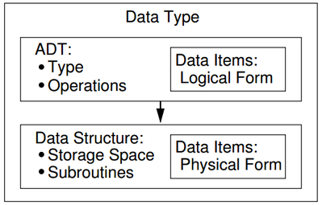
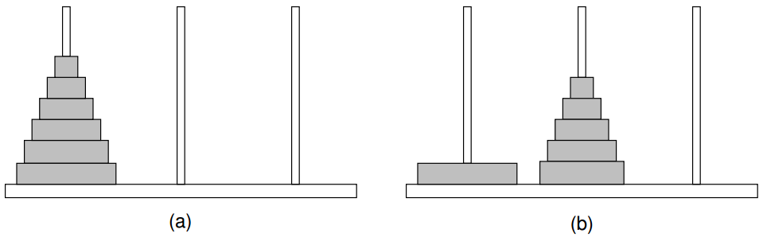

Data Structure and Algorithm Analysis C++
Table of Contents
1 Preface
Why must programs be efficient when new computers are faster every year? The reason is that our ambitions grow with our capabilities. … the modern revolution in computing power and storage capability merely raises the efficiency stakes as we attempt more complex tasks.
The quest for program efficiency need not and should not conflict with sound design and clear coding. Creating efficient programs … is based on good organization of information and good algorithms. … Generality in design can and should be achieved without sacrificing performance.
Principle 1: Each data structure and each algorithm has costs and benefits.
To assess costs and benefits requires:
- understanding of the principles of algorithm analysis
- appreciation for the significant effects of the physical medium employed, e.g. disk versus main memoryh
Principle 2: Programmers face tradeoff issues regularly in all phases of software design and implementation.
Principle 3: Programmers should know enough about common practice to avoid reinventing the wheel.
Common practice:
- commonly used data structures
- related algorithms
- frequently encountered design patterns
Principle 4: Data structures follow needs. Programmers must learn to assess application needs first, then find a data structure with matching capabilities.
… features such as classes, private class members, constructors, and destructors … support the crucial concept of separating logical design, as embodied in the abstract data type, from physical implementation as embodied in the data structure.
2 Chapter 1: Data Structures and Algorithms
(To solve problems,) it is not enough to have the necessary information. We must organize that information in a way that allows us to find the answers in time to satisfy our needs. … The primarypurpose of most computer programs is not to perform calculations, but to store and retrieve information — usually as fast as possible.
2 goals of computer program design: to design an algorithm that
- is easy to understand, code, and debug
- makes efficient use of the computer's resources
Asymptotic analysis（渐进分析）
- to evaluate the efficiency of an algorithm or computer program
- to measure the inherent difficulty of a problem
2.1 A Philosophy of Data Structures
2.1.1 The Need for Data Structures
As we develop more powerful computers, our history so far has always been to use that additional computing power to tackle more complex problems, be it in the form of more sophisticated user interfaces, bigger problem sizes, or new problems previously deemed computationally infeasible.
As tasks become more complex, they become less like our everyday experience.
In the most general sense, a data structure is:
- data representation
- its associated operations
A solution is said to be efficient if it solves the problem within the required resource constraints. … Most often, cost is measured in terms of one key resource such as time, with the implied assumption that the solution meets the other resource constraints.
Only by first analyzing the problem to determine the performance goals that must be achieved can there be any hope of selecting the right data structure for the job.
Steps to select a data structure:
- Analyze the problem to determine the basic operations.
Resource constraints on certain key operations, such as search, inserting data records, and deleting data records, normally drive the data structure selection process. - Quantify the resource constraints for each operation.
- Select the data structure that best meets these requirements.
Issues relating to the relative importance of the basic operations are addressed by:
- Are all data items inserted at the beginning, or are insertions interspersed with other operations?
Static applications (where the data are loaded at the beginning and never change) typically require only simpler data structures to get an efficient implementation than do dynamic applications. - Can data items be deleted?
If so, this will probably make the implementation more complicated. - Are all data items processed in some well-defined order, or is search for specific data items allowed?
"Random access" search generally requires more complex data structures.
2.1.2 Costs and Benefits
A data structure requires a certain amount of:
- space for each data item it stores
- time to perform a single basic operation
- programming effort
The typical customer opens and closes accounts far less often than he or she accesses the account. Customers are willing to wait many minutes while accounts are created or deleted but are typically not willing to wait more than a brief time for individual account transactions such as a deposit or withdrawal.
Considering the choice of data structure … little concern for the cost of deletion, but is highly efficient for search and moderately efficient for insertion. Records are accessible by unique account number (exact-match query). One data structure that meets these requirements is the hash table.
The hash table can be reorganized periodically to restore the system to peak efficiency. Such reorganization can occur offline.
Hash table cannot perform efficient range queries. B+-tree supports large databases, insertion and deletion of data records, and range queries. However, a simple linear index would be more appropriate if the database is created once, and then never changed.
2.2 Abstract Data Types and Data Structures
- Type
- A collection of values.
- Data item
- A piece of information or record whose value is drawn from a type.
A data item is a member of a type. - Data member
- A variable that defines the space required by a data item.
- Data type
- A type together with a collection of operations to manipulate the type.
Data types have both a logical and a physical form.
- The definition of the data type in terms of an ADT is its logical form.
- The implementation of the data type as a data structure is its physical form.

Figure 1: The relationship between data items, abstract data types, and data structures.
- Abstract data type (ADT)
- Realization of a data type as a software component.
The interface of the ADT is defined in terms of a type and a set of operations on that type.
An ADT does not specify how the data type is implemented.
An ADT might be supported by more than one implementation.
- Encapsulation
- Hiding ADT implementation details from the user and protect it from outside access.
- Data structure
- Implementation for ADT.
Often refers to data stored in a computer's main memory. - File structure
- Often refers to the organization of data on peripheral storage.
Most drivers can operate many different cars because the ADT presents a uniform method of operation that does not require the driver to understand the specifics of any particular engine or drive design.
The concept of an ADT is one instance of an important principle: managing complexity through abstraction.
Humans deal with complexity by assigning a label to an assembly of objects or concepts and then manipulating the label in place of the assembly. Cognitive psychologists call such a label a metaphor. Labels allows us to focus on important issues while ignoring unnecessary details.
- Class
- An ADT and its implementation.
- Object
- An instance of a class.
Created and takes up storage during the execution of a computer program.
List implementations
- linked list
- array-based list
- Array
- A contiguous block of memory locations, where each memory location stores one fixed-length data item.
A logical data type composed of a collection of data items, with each data item identified by an index number.
Large disk-based database implementations
- hashing
- more efficient for exact-match queries
- B+-tree
- more efficient for range queries
2.3 Design Patterns
- Design pattern
- Abstractions describing the design of programs, i.e. the interactions of objects and classes.
Higher level abstractions than ADTs.
A design pattern embodies and generalizes important design concepts for a recurring problem.
A primary goal of design patterns is to quickly transfer the knowledge gained by expert designers to newer programmers. Another goal is to allow for efficient communication between programmers.
2.3.1 Flyweight
When there is duplication of the same information, to reduce memory cost by sharing space.
We do not want to create a separate "C" object everywhere in the document that a "C" appears. The solution is to allocate a single copy of the shared representation for "C" objects. The various instances of references to a specific form of "C" are called flyweights.
2.3.2 Visitor
A generic traversal function, and pass in the activity to be performed at each node.
The visitor design pattern is focused on encapsulating an activity that will be performed on all members of a collection so that completely different activities can be substituted within a generic method that accesses all of the collection members.
2.3.3 Composite
To deal with the relationship between a collection of actions and a hierarchy of object types.
The procedural design approach
- each action method traverses through the collection of objects
- adding a new object type requires that we modify each activity
Composite design pattern
- bury the functional activity in the subclasses
- each object subclass in the hierarchy embody the action for each of the various activities that might be performed
- adding a new activity requires that we modify each subclass
The composite design pattern is about whether to give control of the traversal process to the nodes of the tree or to the tree itself.
2.3.4 Strategy
To encapsulate and make interchangeable a set of alternative actions.
The strategy design pattern is focused on encapsulating an activity that is part of a larger process, so that different ways of performing that activity can be substituted.
2.4 Problems, Algorithms, and Programs
- Problem
- A task to be performed.
A function or a mapping of inputs to outputs.
The solution method should be developed only after the problem is precisely defined and thoroughly understood.
A problem definition should include constraints, whether stated or implied, on the resources that may be consumed by any acceptable solution.
- Function (in the mathematical sense)
- A matching between inputs (the domain) and outputs (the range).
- Parameter (of the function)
- The values making up an input.
- Instance (of the problem)
- A specific selection of values for the parameters.
For all computer programs, the output is completely determined by the program's full set of inputs. Even a "random number generator" is completely determined by its inputs ( some random number generating systems appear to get around this by accepting a random input from a physical process beyond the user's control).
- Algorithm
- A method or a process followed to solve a problem.
A problem can be solved by many different algorithms. A given algorithm solves only one problem.
One solution might be more efficient than another solution for a specific variation of the problem, or for a specific class of inputs to the problem.
Properties of an algorithm
- It is composed of a series of concrete steps.
- Each step must be understood and doable (in a finite amount of time).
- There can be no ambiguity as to which step will be performed next.
- It must be composed of a finite number of steps.
- It must terminate.
An algorithm must provide sufficient detail that it can be converted into a program when needed.
- Program
- An instance, or instantiation of an algorithm in a programming language.
The requirement that an algorithm must terminate means that not all computer programs meet the technical definition of an algorithm. Your operating system is one such program.
3 Chapter 2: Mathematical Preliminaries
Estimation is not a mathematical technique, but rather a general engineering skill.
Any proposed solution whose estimated resource requirements fall well outside the problem's resource constraints can be discarded immediately, allowing time for greater analysis of more promising solutions.
3.1 Sets and Relations
- Set
- A collection of distinguishable members or elements.
The members are typically drawn from some larger population known as the base type.
There is no concept of duplication in a set. Each value from the base type is either in the set or not in the set. - Power set
- The powerset of a set \(S\) is the set of all possible subsets for \(S\).
Consider $S = \{a, b, c\}$. The powerset of \(S\) is $\{\varnothing, \{a\}, \{b\}, \{c\}, \{a, b\}, \{a, c\}, \{b, c\}, \{a, b, c\}\}$. - Bag
- A collection of elements with no order (like a set), but with duplicate-valued elements.
e.g., bag $[3, 4, 5, 4]$ is distinct from bag $[3, 4, 5]$, while set $\{3, 4, 5, 4\}$ is indistinguishable from set $\{3, 4, 5\}$. - Sequence (or tuple, vector)
- A collection of elements with an order, and which may contain duplicate-valued elements.
e.g., sequence $\langle 3, 5, 4, 4 \rangle$ is distinct from sequence $\langle 3, 4, 5, 4 \rangle$
| Duplication | Order | Presentation | |
|---|---|---|---|
| Set | No | No | $\{3, 4, 5\}$ |
| Bag | Yes | No | $[3, 4, 5, 4]$ |
| Sequence | Yes | Yes | $\langle 3, 4, 5, 4 \rangle$ |
- Relation
- A relation \(R\) over set \(S\) is a set of ordered pairs from \(S\).
e.g., $S = \{a, b, c\}$, then $\{ \langle a, c \rangle, \langle b, c \rangle, \langle c, b \rangle \}$ is a relation.
If tuple $\langle x, y \rangle$ is in relation \(R\), we may use the infix notation $xRy$.
| Reflexive | if $aRa$ |
| Symmetric | if $aRb$, then $bRa$ |
| Antisymmetric | if $aRb$ and $bRa$, then $a = b$ |
| if $a \neq b$, then either $aRb$ or $bRa$ | |
| Transitive | if $aRb$ and $bRc$, then $aRc$ |
| Reflexive | Symmetric | Antisymmetric | Transitive | |
|---|---|---|---|---|
| \(<\) | Yes | Yes | ||
| $\leqslant$ | Yes | Yes | Yes | |
| $\equiv$ (同余) | Yes | Yes | Yes | |
| "is sibling of" | Yes | Yes | ||
| $\subseteq$ | Yes | Yes |
- Equivalence relation
- A reflexive, symmetric, and transitive relation. e.g., $\equiv$ (同余).
An equivalence relation can be used to partition a set into equivalence classes. - Partition
- A partition of a set \(S\) is a collection of subsets that are disjoint from each other and whose union is \(S\).
- Partial order
- A binary relation is called a partial order if it is antisymmetric and transitive.
- Partially ordered set (or poset)
- The set on which the partial order is defined.
- Comparable
- Elements \(x\) and \(y\) are comparable under a given relation if either $xRy$ or $yRx$.
- Total order (or linear order)
- If every pair of distinct elements in a partial order are comparable.
e.g., \(<\) is a total order because, for every pair of integers \(x\) and \(y\) such that $x \neq y$, either $x < y$ or $y < x$. e.g., $\subseteq$ is a partial order but not a total order because, sets $\{1, 2\}$ and $\{1, 3\}$ are not comparable.
3.2 Miscellaneous Notation
Spaces are not placed between the number and the unit abbreviation when a power of two is intended.
Spaces are used when a decimal value is intended.
e.g., 2000 bits would therefore be written "2 Kb", while "2Kb" represents 2048 bits.
- Factorial function
- $n!$
Computing the factorial function directly is a time-consuming process.
Stirling's approximation states that $n! \approx \sqrt{2 \pi n}(\frac{n}{e})^{n}$.
Thus $n!$ grows slower than $n^{n}$, but faster than $c^{n}$ for any positive integer constant \(c\).
- Permutation
- A permutation of a sequence \(S\) is the members of \(S\) arranged in some order.
// Randomly permute the "n" values of array "A" template<typename E> void permute(E A[], int n) { for (int i=n; i>0; i--) swap(A, i-1, Random(i)); }
| $A \Rightarrow B$ | A implies B |
|---|---|
| if A then B | |
| $A \Leftrightarrow B$ | A if and only if B |
| A is equivalent to B | |
| $A \lor B$ | A or B |
| $A \land B$ | A and B |
| $\sim A$ or $\overline{A}$ | not A |
| negation of A |
| $\lfloor x \rfloor$ | floor of \(x\) | $\lfloor -3.4 \rfloor = -4$ |
|---|---|---|
| $\lceil x \rceil$ | ceiling of \(x\) |
- Modulus function
- $n\ mod\ m$
The most common mathematical definition computes the mod function as $n\ mod\ m = n - m \lfloor n / m \rfloor$, so $-3\ mod\ 5 = 2$.
On many computers this is done by truncating the resulting fraction, meaning $n\ mod\ m = n − m(trunc(n/m))$, and $-3\ mod\ 5 = -3$.
Many hash systems will perform some computation on a record's key value and then take the result modulo the hash table size. The expectation here would be that the result is a legal index into the hash table, not a negative number.
Implementers of hash functions must either
- insure that the result of the computation is always positive
- add the hash table size to the result of the modulo function when that result is negative
3.3 Logarithms
The minimum number of bits needed to represent \(n\) distinct code values is $\lceil \log_2 n \rceil$ bits.
Logarithms with a base of 2 are most often used because
- algorithms most often divide things in half
- data structures store codes with binary bits
For \(n\) and any two constants \(a\) and \(b\), $\log_a n$ and $\log_b n$ differ by the constant factor $\log_b a$, regardless of the value of \(n\). $$ \log_b a = \log_b n / \log_a n $$ So runtime analyses need not be concerned with the base of the logarithm, because this can change the total cost only by a constant factor.
3.4 Summations and Recurrences
$$\sum\limits_{i=1}^n f(i) = f(1)+f(2)+ \dotsb +f(n)$$
- Closed-form solution
- To replace it with an algebraic equation with the same value as the summation.
The process of replacing the summation with its closed-form solution is known as solving the summation.
$$\begin{align} & \sum\limits_{i=1}^n i = \dfrac{n(n+1)}{2} \\ & \sum\limits_{i=1}^n i^2 = \dfrac{2n^3 + 3n^2 + n}{6} = \dfrac{n(2n+1)(n+1)}{6} \\ & \sum\limits_{i=1}^{\log n} n = n \log n \\ & \sum\limits_{i=0}^\infty a^i = \dfrac{1}{1-a} \ \text{for} \ 0 < a < 1 , \text{special case} \sum\limits_{i=1}^n \frac{1}{2^i} = 1 - \frac{1}{2^n} \\ & \sum\limits_{i=0}^n a^i = \dfrac{a^{n+1}-1}{a-1} \ \text{for} \ a \neq 1 , \text{special case} \sum\limits_{i=0}^n 2^i = 2^{n+1} - 1 \\ \text{so} & \sum\limits_{i=0}^{\log n} 2^i = 2^{\log n + 1} - 1 = 2n - 1 \\ & \sum\limits_{i=1}^n \frac{i}{2^i} = 2 - \dfrac{n+2}{2^n} \end{align}$$
- Harmonic series (调和级数)
- The sum of reciprocals from \(1\) to \(n\), written as $H_n$.
$H_n$ has a value between $log_e n$ and $log_e n + 1$.
$$ H_n = \sum\limits_{i=1}^n \frac{1}{i} \approx \log_e n + \gamma + \frac{1}{2n} $$
$\gamma$ is Euler's constant and has the value 0.5772…
- Recurrence relation (递推关系式)
- A recurrence relation defines a function by means of an expression that includes one or more instances of itself.
The definition contains two parts: the general definition and the base cases.
Examples of recurrence relations
- Factorial function: $n! = (n - 1)! · n \ \text{for} \ n > 1; \quad 1! = 0! = 1$
- Fibonacci sequence: $\text{Fib}(n) = \text{Fib}(n - 1) + \text{Fib}(n - 2) \ \text{for} \ n > 2; \quad \text{Fib}(1) = \text{Fib}(2) = 1$
We can expand the recurrence to detect some pattern that will permit us to rewrite the recurrence in terms of a summation:
$$\begin{align} \text{T}(n) & = \text{T}(n - 1) + n; \quad \text{T}(1) = 1 \\ & = \text{T}(n - 2) + (n - 1) + n \\ & = \text{T}(n - (n - 1)) + (n - (n - 2)) + \dotsb + (n - 1) + n \\ & = 1 + 2 + \dotsb + (n - 1) + n \end{align}$$
3.5 Recursion
- Recursion
- An algorithm is recursive if it calls itself to do part of its work.
The "call to itself" must be on a smaller problem.
A recursive algorithm must have two parts:
- the base case, which handles a simple input that can be solved without resorting to a recursive call
- the recursive part which contains one or more recursive calls to the algorithm where the parameters are in some sense "closer" to the base case
long fact(int n) { // Compute n! recursively Assert((n >= 0) && (n <= 12), "Input out of range"); // Require n <= 12 if (n <= 1) return 1; // Base case: return base solution return n * fact(n-1); // Recursive call for n > 1 }
Recursion solves problems by combining the results of one or more smaller — but similar — subproblems.
Recursion has no counterpart in everyday, physical-world problem solving.
To use recursion effectively, it is necessary to train yourself to stop analyzing the recursive process beyond the recursive call. The subproblems will take care of themselves. You just worry about the base cases and how to recombine the subproblems.

Figure 2: Towers of Hanoi example. (a) The initial conditions for a problem with six rings. (b) A necessary intermediate step on the road to a solution.
Assume that a function \(X\) is available to solve the problem of moving the top $n - 1$ rings from Pole 1 to Pole 2.
Then move the bottom ring from Pole 1 to Pole 3.
Finally, again use function \(X\) to move the remaining $n - 1$ rings from Pole 2 to Pole 3.
void TOH(int n, Pole start, Pole goal, Pole temp) { if (n == 0) return; // Base case TOH(n-1, start, temp, goal); // Recursive call: n-1 rings move(start, goal); // Move bottom disk to goal TOH(n-1, temp, goal, start); // Recursive call: n-1 rings }
A recursive algorithm usually does not yield the most efficient computer program for solving the problem because recursion involves function calls, which are typically more expensive than other alternatives such as a
whileloop.If necessary, the clear, recursive solution can later be modified to yield a faster implementation.
Many data structures are naturally recursive, in that they can be defined as being made up of self-similar parts. Tree structures are an example of this. Thus, the algorithms to manipulate such data structures are often presented recursively.
Many searching and sorting algorithms are based on a strategy of divide and conquer. That is, a solution is found by breaking the problem into smaller (similar) subproblems, solving the subproblems, then combining the subproblem solutions to form the solution to the original problem. This process is often implemented using recursion.
3.6 Mathematical Proof Techniques
Solving any problem has two distinct parts:
- the investigation
- the argument
To solve the problem, you must investigate successfully. That means engaging the problem, and working through until you find a solution.
To give the answer to your client, you need to be able to make the argument in a way that gets the solution across clearly and succinctly.
Standard proof techniques are helpful for the argument.
3 commonly used proof techniques:
- deduction, or direct proof
- proof by contradiction
- proof by mathematical induction
3.6.1 Direct Proof
A direct proof is a logical explanation, written in English with words such as "if … then".
3.6.2 Proof by Contradiction
The simplest way to disprove a theorem or statement is to find a counterexample to the theorem.
However, no number of examples supporting a theorem is sufficient to prove that the theorem is correct.
To prove a theorem by contradiction:
- First assume that the theorem is false.
- Then find a logical contradiction stemming from this assumption.
A related proof technique is proving the contrapositive: prove that $P \Rightarrow Q$ by proving $(\text{not} Q) \Rightarrow (\text{not} P)$.
3.6.3 Proof by Mathematical Induction
// TODO:
3.7 Estimation
One of the most useful life skills that you can gain from your computer science training is the ability to perform quick estimates.
Estimation is no substitute for rigorous, detailed analysis of a problem, but it can serve to indicate when a rigorous analysis is warranted: If the initial estimate indicates that the solution is unworkable, then further analysis is probably unnecessary.
Estimation can be formalized by in 3 steps:
- Determine the major parameters that affect the problem.
- Derive an equation that relates the parameters to the problem.
- Select values for the parameters, and apply the equation to yield an estimated solution.
A good way to reassure yourself that the estimate is reasonable is to do it in 2 different ways.
The output of a calculation is only as good as its input. The more uncertain your valuation for the input parameters, the more uncertain the output value.
Back of the envelope calculations are often meant only to get an answer within an order of magnitude, or perhaps within a factor of 2.